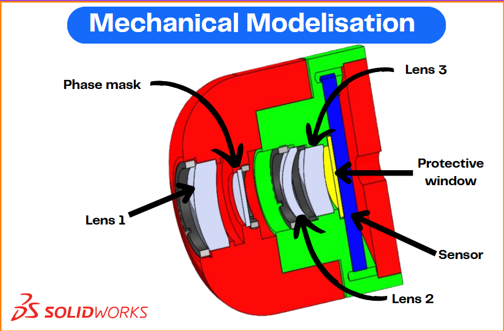

Justification
As part of the MOSAIC project, we ensured compliance with the predefined list of technical specifications. This process was essential for maintaining the overall integrity and feasibility of the project, ensuring that all components and methodologies met the required performance criteria.
Based on the tolerance data generated in Zemax and the technical specifications defined by the team at the start of the project, I designed the mechanical mounting of the optical system using SolidWorks. My objective was to ensure that the structure respected all dimensional and alignment constraints while maintaining mechanical stability and feasibility for integration.
Proofs
